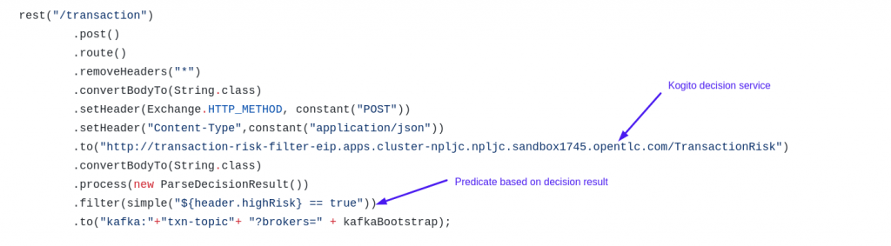

Implementing the Filter EIP using Camel-k and Kogito
Apache Camel is an Open Source integration framework that supports the implementation of the Enterprise Integration patterns (EIP). The Message Filter EIP allows you to eliminate undesired messages from a channel based on a set of criteria. The pattern uses a predicate to decide if the messages should be dropped or not.
Oftentimes the predicate logic can be complex, and might need more transparency and control by the business user. For instance, let us say we have transactions coming in, and we are only interested in the high risk transactions. As you can imagine, the rules that govern the risk can be complicated. This is where a rules engine can come in handy, to provide for a business user friendly methodology to define the predicate logic.
In this article we will discuss how to implement the Filter EIP using the cloud native technologies – Kogito and Camel-K. Kogito is designed to deliver powerful capabilities for building process and rules based applications natively in the cloud on a modern container platform. Camel K is a lightweight integration framework built from Apache Camel to run natively on Kubernetes
Defining the Transaction Risk Rules
Let us first define the transaction risk rules. As you can see below, the transaction risk is based on transactionAmount, transactionCountry and merchant information.


Deploying the decision service
The kogito project for this decision can be found here. Let us now deploy this DMN as a kogito decision service on openshift. For this install the kogito operator.

Now let us create a kogito build using the repo above.

After the Build and Deploy the kogito decision service exposes a route so that we can invoke the decision service.

We can now invoke the decision service and test it.

Defining the Camel Route
Let us now define the camel route. We first invoke the decision service. The service returns back a payload with a boolean value indicating the risk. We then use this decision result in the predicate for deciding if this transaction needs further processing.

As you can see, the complexity of deciding if the transaction is high risk is offloaded to the kogito decision layer. The entire camel route definition can be found here.
Deploying the Camel Route using Camel-K
We will now install the Camel K operator and deploy the integration micro service.
kamel install
Kamel run FilterEIP.javaTesting the Integration microservice
Now we can lookup the route that is auto generated by the REST DSL component and send in a transaction payload.

We can now see that the data is now available in the kafka topic.
Notice the header information, where we set the decision evaluation to decide if the transaction needs to be sent to kafka.
We will now send in a request, with a low risk.

Now, we can see the risk is evaluated to be false and this transaction is filtered for post processing, so we don’t see it on the kafka topic.
Similarly, it is possible to plug in decision points to other EIP patterns like content routing. Check out this blog post from Matteo Mortari about how you can use DMN decisions for content based routing in Camel.
References
https://camel.apache.org/components/3.7.x/eips/filter-eip.html